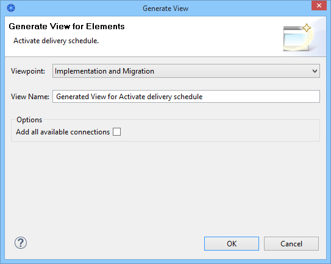

Generate a View from Elements
You can generate a new diagram View from selected ArchiMate element(s). Selected ArchiMate element(s) then become the focus of a newly generated View. Any ArchiMate elements that are related to the selected elements are also added to the generated View together with any connections.
This feature allows you to quickly create a new View and Viewpoint specifically for one or more related ArchiMate elements.
To generate a new View from selected element(s):
- Ensure that you have selected one or more ArchiMate elements in the Models Tree or in a diagram View.
- Select the option "Generate View For..." from the right-click context menu, or from the main "Tools" menu.
- In the dialog window select the target Viewpoint for the generated View. The list of available Viewpoints is determined by the selected element(s) and whether they are permitted in a Viewpoint. Note also that elements that are related to the selected element(s) that are not permitted in the target Viewpoint will not be included in the generated View. If you want to include all related elements in the target View, or if you are not sure, choose the "None" Viewpoint. You can change the Viewpoint later if you wish.
- If you wish, change the name of the generated View.
- Optionally check "Add all available connections". If this option is checked, all connections between elements are added to the generated View. If unchecked, only connections that are directly related to the selected element(s) are added to the generated View.
- Click OK

Generate View Dialog
A new View will be created containing the selected element(s) and their connections.